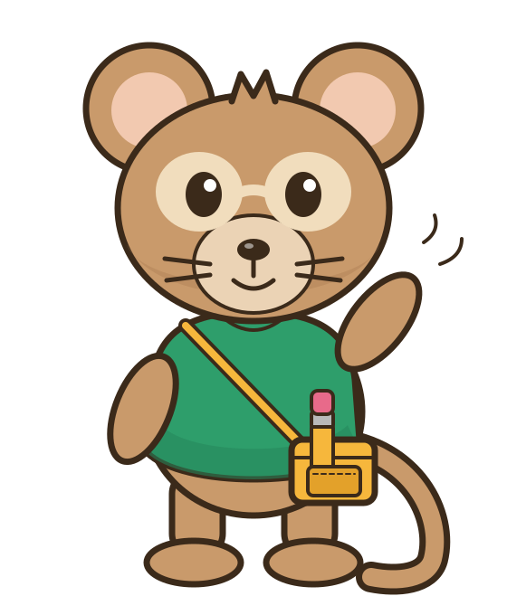
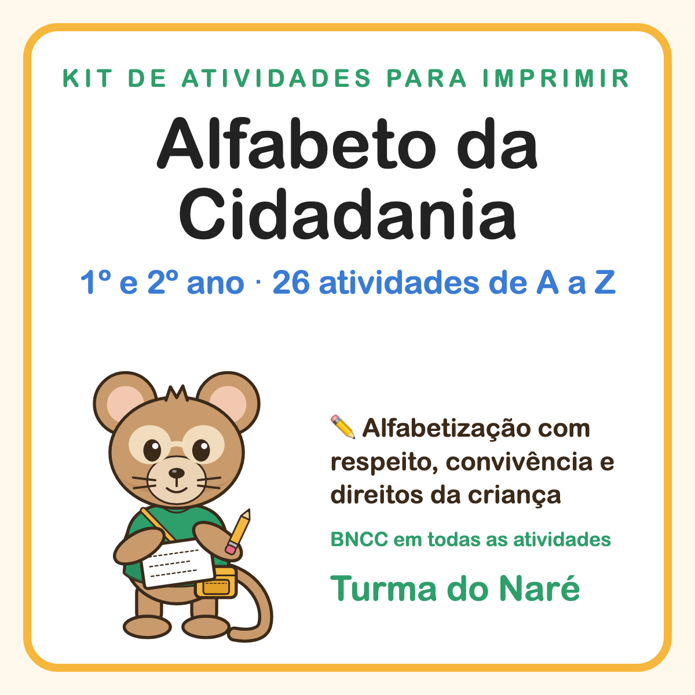
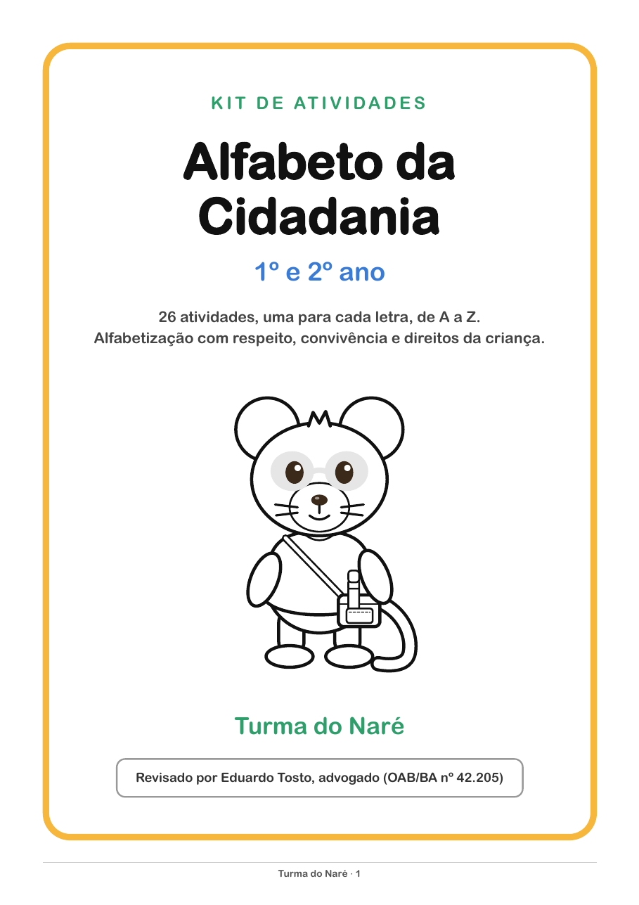
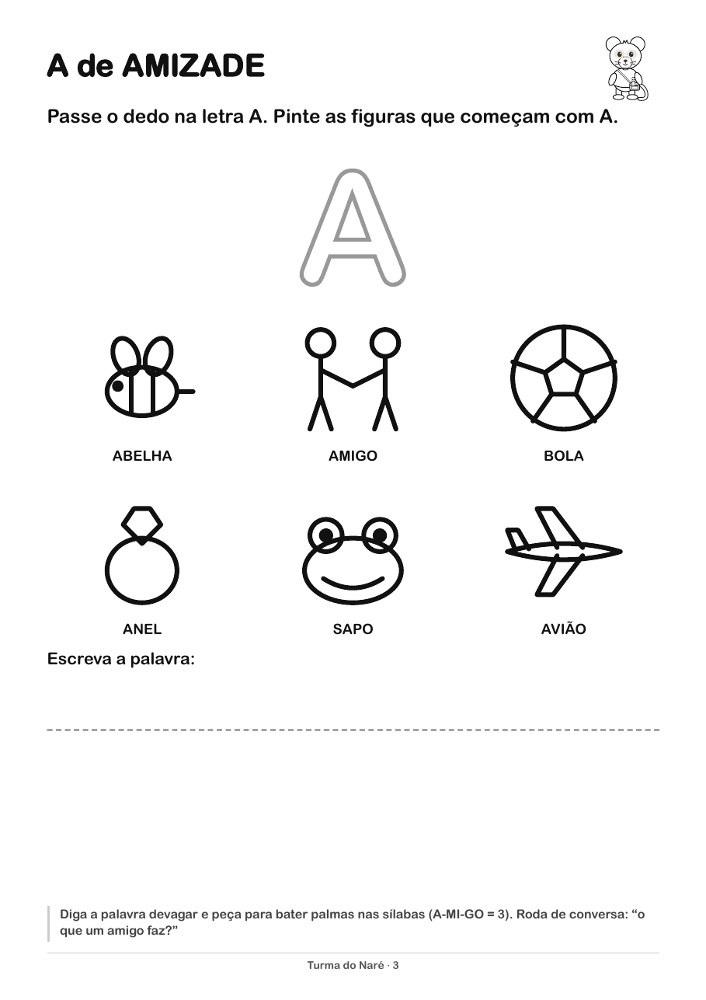
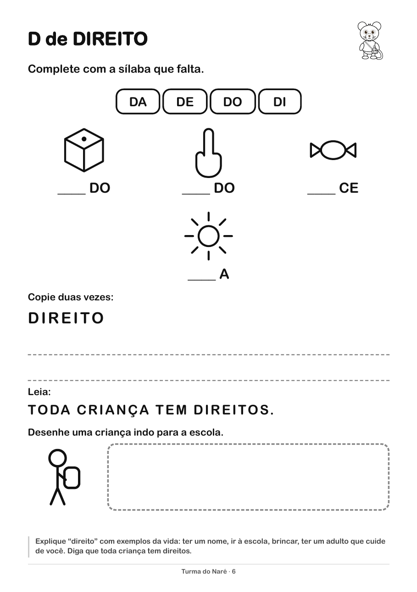
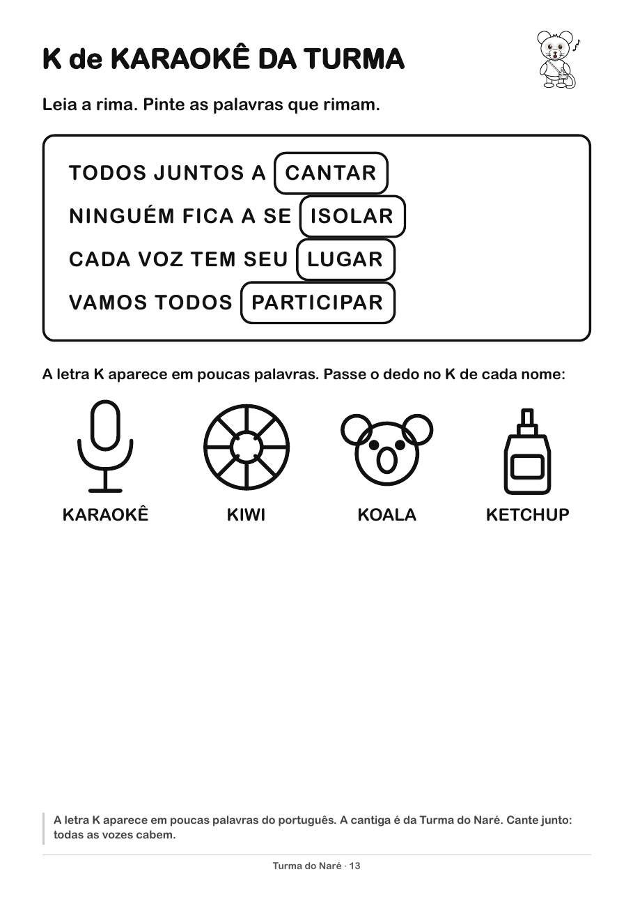
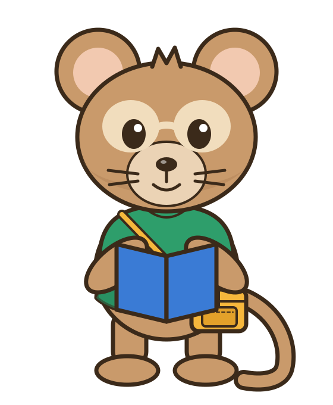

Alfabetização com cidadania, do jeito do Naré
Atividades para imprimir, para o 1º e o 2º ano: letras, sílabas, leitura e escrita junto com convivência, respeito e direitos da criança. Cada atividade indica a habilidade da BNCC.
Baixar amostra grátis Ver o kit

Alfabeto da Cidadania
26 atividades de A a Z · PDF para imprimir
- 30 páginas: capa, orientações para a professora, 26 atividades e 2 páginas de gabarito.
- Cada letra traz uma palavra-tema: A de Amizade, D de Direito, P de Paz, R de Respeito...
- Trabalha os direitos da criança junto com a alfabetização, como prevê o art. 32, § 5º, da LDB.
- Funciona bem em preto e branco. Imprima quantas vezes precisar para as suas turmas.
R$ 27
Comprar pela HotmartRevisado por Eduardo Tosto, advogado (OAB/BA nº 42.205)
Veja algumas páginas
Folhas com contorno grosso e áreas grandes, pensadas para a criança de 6 e 7 anos.




Amostra grátis
Receba 4 páginas do Alfabeto da Cidadania para testar com a sua turma.
Deixe seu nome e e-mail e baixe na hora. Avisaremos também quando sair um kit novo.
Você pode pedir para sair da lista quando quiser. Veja a política de privacidade.
Quem é o Naré?
O Naré é um punaré, um bichinho da Caatinga, que mora no sertão da Bahia. Curioso e perguntador, ele coleciona palavras num caderninho e sonha em ser advogado, para ajudar as pessoas a resolver os problemas com palavras e com justiça.
Com a turma dele, as crianças aprendem a ler e a escrever enquanto conversam sobre respeito, regras e direitos.